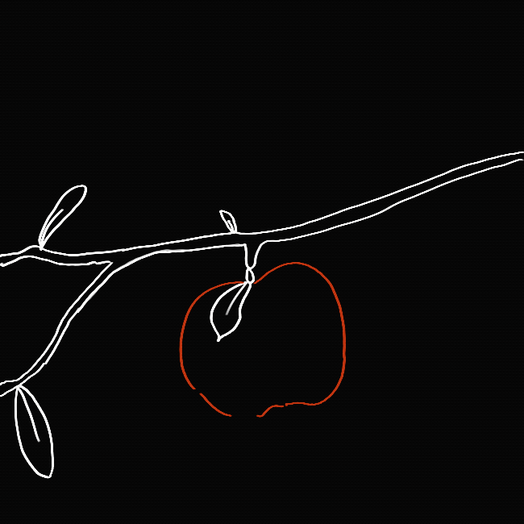

For this assignment, I drew inspiration from the film Lady Bird, which explores the complex relationship between a child and a parent. More specifically, it revolves around the experience of how the relationship can become complicated when identity or approval comes into question and how it could even seep into self-worth.
